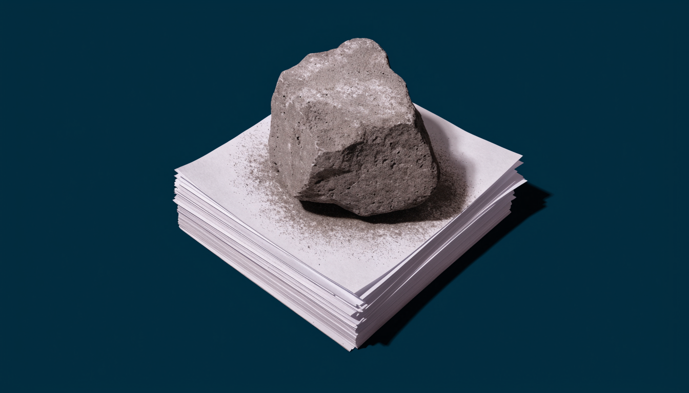

La piedra se mueve cuando la avientan
La CNDH condenó en un día el gas contra la marcha por el agua en Guadalajara, gobernada por Movimiento Ciudadano, y la Presidenta le pidió averiguar quién dio la orden. Frente al gas en el Zócalo el 15 de noviembre de 2025, la Comisión no se pronunció. La Constitución le da dos llaves para investigar, su propio juicio o la petición del Ejecutivo; el Centro Prodh contó que 115 de sus 132 recomendaciones por violaciones graves de 2019 a 2024 miraron a hechos anteriores a 2018. Guillermo O'Donnell lo llamó rendición de cuentas horizontal.

La Comisión Nacional de los Derechos Humanos tardó un día en condenar la represión de una marcha por el agua en Guadalajara. Frente al gas en el Zócalo, once meses antes, no ha dicho nada en casi un año. Las dos cosas pueden ser ciertas sin que nadie haya roto una regla escrita. Lo que se rompe es otra cosa: la idea de que existe un vigilante que no escoge a quién vigilar.
Guadalajara, 11 de octubre
Miles de personas, unas 10 mil según el gobierno estatal, caminaron de La Minerva a Casa Jalisco para exigir agua limpia. La policía estatal las dispersó con gas lacrimógeno y chorros de agua a presión. El gobierno de Pablo Lemus reportó 39 detenidos y 28 policías lesionados. El Centro de Justicia para la Paz y el Desarrollo denunció que varias personas fueron golpeadas dentro de la residencia oficial y que sus abogados no pudieron verlas.
El lunes 12 por la tarde, la CNDH ya había condenado el uso de "medios coercitivos y represivos" y exigido investigar con legalidad, necesidad y proporcionalidad. El miércoles 14, un reportero le preguntó en la conferencia matutina por tres casos de abuso policial en Guanajuato, estado que gobierna el PAN. La presidenta Claudia Sheinbaum respondió trayendo Jalisco a la mesa: la Comisión Nacional "tiene que hacer una investigación muy profunda. ¿Quién dio la orden? ¿Por qué?". Para Guanajuato pidió lo mismo, a la CNDH o a la Fiscalía General. Remató que no pueden permitirlo "nosotros que venimos de luchar contra la represión". La Comisión anunció que atraía el caso de Jalisco.
Nada de eso está mal. Hay detenidos que denuncian golpes y merecen esa revisión.
El Zócalo, 15 de noviembre
La marcha convocada como Generación Z avanzó en paz por Reforma. Al llegar a la plaza, un grupo encapuchado derribó las vallas metálicas de Palacio Nacional y la policía capitalina respondió con gas, polvo químico y extintores. Las cifras oficiales hablaron de alrededor de 100 policías lesionados y unos 20 civiles heridos, con reportes de agresiones a periodistas.
Dos días después, la Presidenta dijo en su conferencia: "En México no se reprime a los jóvenes". Pidió investigar "quiénes son estos grupos, por qué esta violencia y si están pagados". También pidió sancionar a cualquier policía que hubiera abusado.
De la CNDH no salió comunicado ni mensaje en redes. El 10 de diciembre, en el Senado, reporteros le preguntaron a Rosario Piedra Ibarra por la actuación de la policía de la capital. Respondió "vamos a acompañar" y se retiró sin más.
Dos llaves
El último párrafo del artículo 102, apartado B, de la Constitución dice que la Comisión "podrá investigar hechos que constituyan violaciones graves de derechos humanos, cuando así lo juzgue conveniente o lo pidiere el Ejecutivo Federal". Son dos llaves. Una la tiene la propia Comisión; la otra, Palacio Nacional. En Guadalajara giraron las dos, una el lunes y otra el miércoles. En el Zócalo no giró ninguna.
La petición presidencial es perfectamente constitucional. Lo que no aparece en la Constitución es una tercera llave, la del color del gobierno local, y sin embargo los hechos se comportan como si existiera.
Una piedra no se mueve sola. Se mueve cuando la avientan, y cae donde alguien apuntó.
El historial no desmiente esa sospecha. Al revisar la gestión 2019-2024, el Centro Prodh documentó que, de 132 recomendaciones por violaciones graves, 115 se refieren a hechos anteriores al 1 de diciembre de 2018. La Guardia Nacional acumuló 1,816 quejas y recibió 13 de esas recomendaciones. Todo eso, en un sexenio que cerró con alrededor de 200 mil homicidios. Su recomendación general sobre la represión del Estado, la 46/2022, documenta lo ocurrido entre 1951 y 1965. Para mirar al pasado, la Comisión tiene buena vista.
El tablero
Morena nunca ha gobernado Jalisco. En 2024 perdió la gubernatura frente a Lemus y exigió recontar voto por voto. El martes 13, su presidenta nacional, Ariadna Montiel, pidió la renuncia del gobernador: "si no puede, que renuncie". En 2027 se eligen las alcaldías de Guadalajara y Zapopan y el Congreso local, y varias encuestas ponen a Morena por delante en la capital.
Con los propios, el registro de la Presidenta es otro. Sobre el almirante Rafael Ojeda, cuyos sobrinos están procesados como presuntos operadores de la red de huachicol fiscal, dijo en mayo que no hay ninguna carpeta en su contra. Sobre Adán Augusto López y el caso de Hernán Bermúdez, que no hay pruebas. Cuando la Cámara de Diputados rechazó en marzo de 2025 el desafuero de Cuauhtémoc Blanco que había pedido la Fiscalía de Morelos, respondió que la decisión era de la Cámara. En los tres casos puede tener razón jurídica. Lo que cambia es la pregunta: a los de casa se les pide la prueba; al de enfrente, el nombre de quien dio la orden.
La misma historia, dos veces
Hay que poner sobre la mesa lo que debilita este argumento. La policía de la Ciudad de México investigó a 18 agentes por uso excesivo de la fuerza y suspendió a 7, y la comisión local de derechos humanos recibió quejas por el 15 de noviembre. No hubo un vacío total; hubo un vacío federal.
El gobernador de Jalisco empezó con el relato del Zócalo: una marcha pacífica hasta que se sumaron unas 400 personas con piedras, tubos y petardos. El libreto del grupo infiltrado le sirve igual a Movimiento Ciudadano que a Morena. La diferencia llegó dos días después: tras revisar los videos, Lemus reconoció un operativo "con graves deficiencias", "uso excesivo de la fuerza" y "detenciones injustas", y los 39 quedaron libres.
Tampoco es exacto decir que la CNDH no trabaja. Reportó 156 recomendaciones ordinarias y 29 por violaciones graves solo en 2025. Produce, y mucho. La duda es hacia dónde.
Nada de lo público prueba que alguien le dicte a la Comisión cuándo moverse. Lo que sí está documentado es cuándo se mueve.
El apellido
Rosario Ibarra de Piedra buscó a su hijo Jesús, desaparecido en Monterrey el 18 de abril de 1975, hasta su muerte en 2022. En 1977 fundó el Comité ¡Eureka! para encarar a un Estado que desaparecía opositores. Su hija, Rosario Piedra Ibarra, fue reelegida en noviembre de 2024 para presidir la CNDH hasta 2029, con 87 votos de Morena y sus aliados en el Senado.
Guillermo O'Donnell llamó rendición de cuentas horizontal a la existencia de agencias del Estado con autoridad y voluntad para vigilar y sancionar a otras agencias del Estado. La palabra que importa es voluntad. Una comisión autónoma que solo se mueve cuando el agraviado es un gobierno ajeno no vigila al poder; le hace el trabajo.
Una piedra no se mueve sola. Se mueve cuando la avientan, y cae donde alguien apuntó. ¿Quién la va a levantar la próxima vez que el gas sea de casa?
- Diario de Yucatán, "Gobernador de Jalisco le responde a Claudia Sheinbaum por violencia en manifestación", 12 de octubre de 2026: 10 mil manifestantes, 39 detenidos, 12 liberados, 28 policías lesionados, versión de las 400 personas. yucatan.com.mx/mexico/2026/10/12/gobernador-de-jalisco-le-responde-a-claudia-sheinbaum-por-violencia-en-manifestacion.html
- Excélsior, "Pablo Lemus ordena investigar actuación policial tras enfrentamientos en marcha por el agua en Jalisco", 12 de octubre de 2026. excelsior.com.mx/nacional/pablo-lemus-investiga-enfrentamientos-marcha-agua-jalisco
- El Financiero, "'Antes que gobernador, soy humano': Lemus reconoce abusos de autoridad contra manifestantes en Jalisco", 13 de octubre de 2026. elfinanciero.com.mx/estados/2026/10/13/antes-que-gobernador-soy-humano-lemus-reconoce-abusos-de-autoridad-contra-manifestantes-en-jalisco
- UDG TV, "Liberan a todos los detenidos por protesta del agua; Pablo Lemus reconoce uso excesivo de la fuerza y detenciones injustas", 14 de octubre de 2026. udgtv.com/noticias/liberan-a-todos-los-detenidos-por-protesta-del-agua/334442
- Grupo Animal, "Crisis de agua: marchan 10 mil manifestantes en Guadalajara", octubre de 2026. grupoanimal.mx/estados/crisis-agua-manifestantes-guadalajara-policias-gases-dispersarlos
- Proceso, "CNDH exige investigar represión policial contra manifestantes por agua contaminada en Jalisco", 12 de octubre de 2026. proceso.com.mx/nacional/estados/2026/10/12/cndh-condena-uso-de-gas-lacrimogeno-y-agua-a-presion-contra-manifestantes-en-guadalajara-381741.html
- Tribuna, "Trasladan al penal a siete detenidos por protesta de agua en Jalisco; Cepad acusa tortura e irregularidades", 13 de octubre de 2026. tribuna.com.mx/mexico/2026/10/13/trasladan-al-penal-a-siete-detenidos-por-protesta-de-agua-en-jalisco-cepad-acusa-tortura-e-irregularidades_701521
- El Universal, "Sheinbaum pide a la CNDH investigar represión en marcha del agua en Jalisco", 14 de octubre de 2026. eluniversal.com.mx/nacion/sheinbaum-pide-a-la-cndh-investigar-represion-en-marcha-del-agua-en-jalisco-no-podemos-permitir-tortura-a-jovenes-afirma
- Presidencia de la República, conferencia de prensa matutina del 14 de octubre de 2026, video oficial, 1:04:43 a 1:10:16: pregunta sobre Guanajuato y respuesta sobre Jalisco y la CNDH. youtube.com/watch?v=HWHIlJjng6Y&t=4034s
- Expansión, "Libia Dennise rinde protesta como gobernadora de Guanajuato", 26 de septiembre de 2024. politica.expansion.mx/mexico/2024/09/26/libia-dennise-rinde-protesta-como-gobernadora-de-guanajuato
- Infobae, "CNDH investigará represión en marcha por crisis de agua en Jalisco", 14 de octubre de 2026. infobae.com/mexico/2026/10/14/cndh-investigara-represion-en-marcha-por-crisis-de-agua-en-jalisco-sheinbaum-le-pide-averiguar-quien-dio-la-orden
- Infobae, "Tras graves disturbios en la marcha de la Gen Z en CDMX, policías dispersaron a los manifestantes en el Zócalo", 15 de noviembre de 2025. infobae.com/mexico/2025/11/15/manifestacion-de-la-gen-z-en-la-cdmx
- Expansión, "'No vamos a caer en la provocación', dice Sheinbaum tras violencia en marcha Z", 17 de noviembre de 2025. politica.expansion.mx/presidencia/2025/11/17/no-vamos-a-caer-en-la-provocacion-dice-sheinbaum-tras-violencia-en-marcha-z
- La Razón, "Siguen hospitalizados 11 policías tras marcha Generación Z, informa SSC CDMX", 17 de noviembre de 2025: 18 policías investigados, 7 suspendidos. razon.com.mx/ciudad/2025/11/17/siguen-hospitalizados-11-policias-tras-marcha-generacion-z-informa-ssc-cdmx
- Infobae, "PAN exige a CNDH y comisión capitalina condenar uso de la fuerza contra protesta de la generación Z", 17 de noviembre de 2025. infobae.com/mexico/2025/11/17/pan-exige-a-cndh-y-comision-capitalina-condenar-uso-de-la-fuerza-contra-protesta-de-la-generacion-z
- Infobae, "Presidenta de la CNDH evade responder sobre disturbios de la Generación Z", 10 de diciembre de 2025. infobae.com/mexico/2025/12/11/presidenta-de-la-cndh-evade-responder-sobre-disturbios-de-la-generacion-z
- Yahoo Noticias, "CDH prevé emitir recomendación por marcha del 15N" (quejas ante la CDHCDMX). es-us.noticias.yahoo.com/cdh-prev%C3%A9-emitir-recomendaci%C3%B3n-marcha-060000094.html
- Constitución Política de los Estados Unidos Mexicanos, artículo 102, apartado B, texto vigente con última reforma publicada en el DOF el 7 de octubre de 2026. Cámara de Diputados: diputados.gob.mx/LeyesBiblio/index.htm
- El Universal, "Así cierra la CNDH 5 años de 'transformación'", 24 de octubre de 2024: 115 de 132 recomendaciones por violaciones graves sobre hechos anteriores al sexenio, según el Centro Prodh. eluniversal.com.mx/nacion/asi-cierra-la-cndh-5-anos-de-transformacion-piedra-ibarra-busca-reeleccion-entre-cuestionamientos
- Expansión, "CNDH, un sexenio omitiendo violaciones graves a derechos humanos, acusa ONG", 16 de octubre de 2024: quejas y recomendaciones de la Guardia Nacional. politica.expansion.mx/mexico/2024/10/16/cndh-un-sexenio-omitiendo-violaciones-graves-a-derechos-humanos-acusa-ong
- CNDH, Recomendación General 46/2022 sobre violaciones graves cometidas por el Estado entre 1951 y 1965. cndh.org.mx/sites/default/files/documentos/2025-10/RecGral_46_Impresa.pdf
- La Jornada, "Destaca Rosario Piedra aumento de personas atendidas en la CNDH", 26 de enero de 2026: 156 recomendaciones ordinarias y 29 por violaciones graves en 2025. jornada.com.mx/noticia/2026/01/26/politica/destaca-rosario-piedra-aumento-de-personas-atendidas-en-la-cndh-y-reduccion-de-quejas-graves-en-2025
- El Financiero, "Sexenio de AMLO reportó más de 200 mil asesinatos", 11 de noviembre de 2024. elfinanciero.com.mx/nacional/2024/11/11/sexenio-de-amlo-reporto-mas-de-200-mil-asesinatos
- El Colegio de México, Seminario sobre Violencia y Paz, boletín de fin de sexenio. violenciaypaz.colmex.mx/archivos/UHVibGljYWNpb24KIDk5CmRvY3VtZW50bw==/Bolet%C3%ADn%20fin%20de%20sexenio%20AMLO.pdf
- El Financiero, "Elecciones Jalisco: Morena exige un voto por voto", 4 de junio de 2024. elfinanciero.com.mx/elecciones-mexico-2024/2024/06/04/elecciones-jalisco-morena-exige-un-voto-por-voto-desconoce-triunfo-de-pablo-lemus
- Zeta Tijuana, "Jalisco, el bastión que MC quiere retener", mayo de 2024. zetatijuana.com/2024/05/jalisco-el-bastion-que-mc-quiere-retener
- Expansión, "Morena llama a renunciar al gobernador de Jalisco", 13 de octubre de 2026. politica.expansion.mx/estados/2026/10/13/renuncie-presidenta-de-morena-a-gobernador-de-jalisco
- Político MX, "Elecciones 2027: Morena domina en municipios clave de Jalisco", 1 de abril de 2026. polls.politico.mx/2026/04/01/elecciones-2027-morena-domina-en-municipios-clave-de-jalisco
- Por Esto, "Claudia Sheinbaum niega investigación contra Rafael Ojeda por huachicol fiscal", 12 de mayo de 2026. poresto.com/mexico/2026/5/12/claudia-sheinbaum-niega-investigacion-contra-rafael-ojeda-por-huachicol-fiscal-el-presento-la-denuncia.html
- El Imparcial, "FGR detalló que los hermanos Farías operaban red de huachicol fiscal", 7 de septiembre de 2026. elimparcial.com/mexico/2026/09/07/fgr-detallo-que-los-hermanos-farias-operaban-red-de-huachicol-fiscal-gestionando-cargos-y-promociones-en-aduanas-y-marina
- Milenio, "Sheinbaum descarta que Adán Augusto esté involucrado en caso La Barredora", septiembre de 2025. milenio.com/politica/sheinbaum-descarta-adan-augusto-involucrado-caso-barredora
- El Financiero, "Que no haya impunidad: Sheinbaum habla de los desafueros de Alito Moreno y Cuauhtémoc Blanco", 4 de abril de 2025. elfinanciero.com.mx/nacional/2025/04/04/que-no-haya-impunidad-sheinbaum-habla-de-los-desafueros-de-alito-moreno-y-cuauhtemoc-blanco
- The Boston Globe, "Mexico's champion of the disappeared, Rosario Ibarra, dies", 16 de abril de 2022. bostonglobe.com/2022/04/16/metro/mexicos-champion-disappeared-rosario-ibarra-dies
- Por Esto, "Rosario Ibarra: la trágica historia de su hijo y cómo le cambió la vida", 16 de abril de 2022. poresto.com/mexico/2022/4/16/rosario-ibarra-la-tragica-historia-de-su-hijo-como-le-cambio-su-vida.html
- Expansión, "Senado avala la reelección de Rosario Piedra como presidenta de la CNDH", 13 de noviembre de 2024. politica.expansion.mx/congreso/2024/11/13/senado-avala-la-reeleccion-de-rosario-piedra-como-presidenta-de-la-cndh
- Guillermo O'Donnell, "Horizontal Accountability in New Democracies", Journal of Democracy, vol. 9, núm. 3, julio de 1998, pp. 112-126. DOI: 10.1353/jod.1998.0051. doi.org/10.1353/jod.1998.0051
Las ligas van a la vista para que cualquiera compruebe por su cuenta. Si alguna dejó de resolver, escríbenos y la reponemos.
SRVO